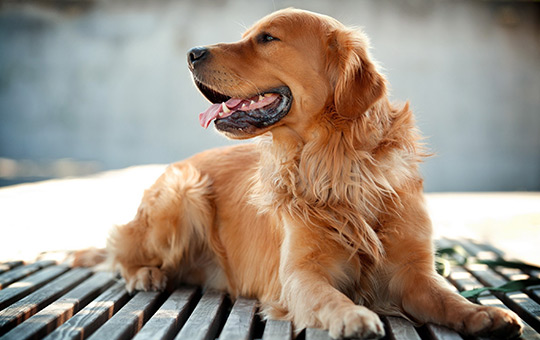

—— 爱犬品种 ——
美好的陪伴来自温暖的生命

法牛系列
FRENCH BULLDOG
聪明敏捷 开朗不常吠
法国斗牛犬是一种活泼、聪明、肌肉发达的狗，骨骼沉重，被毛平滑、结构紧凑，
体型中等或较小。表情显得警惕、好奇而感兴趣。 法国斗牛犬亲切，敦厚，忠
诚，执著，勇敢，具有独特的品位，而且完全表露于表情与动作。对小孩和善，
同时也是作风彪悍，能力强，对于新鲜事物有极强的好奇心的优秀玩具犬。
体型中等或较小。表情显得警惕、好奇而感兴趣。 法国斗牛犬亲切，敦厚，忠
诚，执著，勇敢，具有独特的品位，而且完全表露于表情与动作。对小孩和善，
同时也是作风彪悍，能力强，对于新鲜事物有极强的好奇心的优秀玩具犬。
金毛系列
GOLDEN RETIEVER
热情友善，自信且不怕生
金毛犬是比较现代并很流行的狗的品种，是最常见的家犬之一，因为它很容易
养，有耐心并且对主人要求不多，只要定期的运动，食物和兽医体检就可以了。
金毛的独特之处在于它讨人喜欢的性格，是属于匀称、有力、活泼的一个犬种，
特征是表情友善，个性热情、机警、自信而且不怕生。。
养，有耐心并且对主人要求不多，只要定期的运动，食物和兽医体检就可以了。
金毛的独特之处在于它讨人喜欢的性格，是属于匀称、有力、活泼的一个犬种，
特征是表情友善，个性热情、机警、自信而且不怕生。。


萨摩系列
SAMOYED
乖巧可爱 微笑天使
萨摩耶犬，原是西伯利亚的原住民萨摩耶族培育出的犬种。机警、强壮、灵活、
美丽、高贵优雅、乖巧可爱，有着非常引人注目的外表，体格强健，有“微笑天
使”的称号，也有着“微笑天使面孔，捣蛋魔鬼内心”之称，一岁前调皮、灵动。
萨摩基本上是没有黑色的。
美丽、高贵优雅、乖巧可爱，有着非常引人注目的外表，体格强健，有“微笑天
使”的称号，也有着“微笑天使面孔，捣蛋魔鬼内心”之称，一岁前调皮、灵动。
萨摩基本上是没有黑色的。